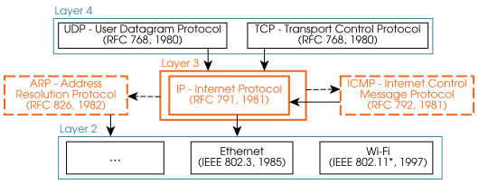
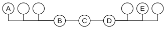
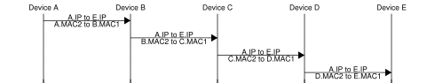
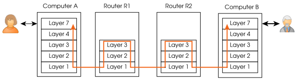
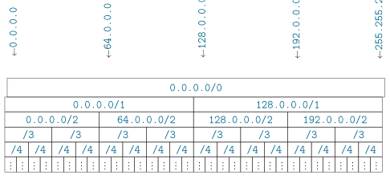
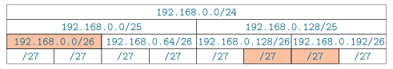

[8] Layer 3: Internet(work) communication¶


Capabilities¶
The Internet Protocol (IP) allows exchanging datagrams (Layer 3 PDUs) between devices from different LANs. Its addressing system identifies devices globally and makes it possible to route datagrams anywhere we need.
Devices communicating via IP may belong to LANs based on different technologies and with different types of MAC address. This has two implications:
-
A datagram that “fits” in the MTU of the source LAN may be too large for the destination’s (or any intermediate’s) LAN MTU. IP defines a fragmentation system to split datagrams, which are reconstructed only at the final destination.
-
When we send a datagram, we know the target device’s IP address, but not necessarily its MAC address. Only if we are part of the destination LAN we will need that MAC. IP uses ARP to translate known IP addresses to MAC addresses of the destination LAN’s type.
Datagrams may travel through networks not controlled by neither the source nor the destination, so datagrams may be lost, reordered and duplicated. Layer 3 does not provide mechanisms to deal with this; upper layers must implement protection mechanisms when required (e.g., to implement TCP’s data streams).

Protocols¶
Version 4 of IP is the protocol used in Layer 3, i.e., it is common to virtually all communications in the Internet as we know it today. For many years, the Internet has been struggling to transition towards IPv6, but the process is not complete and only IPv4 provides global coverage.
IPv4 delegates in the ARP protocol the translation of known IP addresses into MAC addresses within each LAN. ARP does not use IP datagrams.
The following protocols encapsulate their PDUs in the payload of IP datagrams:
-
Transport Control Protocol (TCP)
-
User Datagram Protocol (UDP)
-
Internet Control Message Protocol (ICMP)
Note
The ip address, ip route and ip neighbor commands (among others) let you query several aspects of your IP configuration.
[8.1] Layer 3 addressing¶
IPv4 addresses are \(32\) bits long. They are most often presented to humans in the quad decimal format, e.g.,
142.250.201.67
IPv6 addresses are \(128\) bits (\(12\) bytes) long, i.e., they are \(4\) times larger than an IPv4 address. They are expressed in hexadecimal format, e.g., as follows. Note how two colon signs “::” indicate “fill with zeros”, and “::” may only appear once per IPv6 address.
fe80::f524:a73a:e946:7c02
Note
When an IPv6 address is used as part of an URL, it is surrounded with brackets, e.g., https://[fe80::f524:a73a:e946:7c02]/.
[8.1.1] Public and reserved addresses¶
Most IP addresses are public and unique across the Internet, i.e., the previous IP has the same meaning worldwide: it identifies a single connected device. Many addresses are reserved/private and can only be used within a particular scope (e.g., a LAN) or situation. Some of the most common are the following (there are some more, also for IPv6):
| IP address block | Address scope |
|---|---|
127.*.*.* |
This computer (localhost) |
10.*.*.* |
This LAN |
172.16.*.* |
This LAN |
192.168.*.* |
This LAN |
0.*.*.* |
Special usages |
169.254.*.* |
Special usages |
255.255.255.255 |
Special usages |
Exercise 8.1
-
How many different IPv4 addresses are there (including reserved and private)?
-
Are they sufficient now and in the future?
-
Is it problematic that an address like
192.168.0.1is simultaneously used by thousands (likely millions) of computers in the Internet right now? -
Which of these corresponds to link local addresses?
[8.1.2] Netmasks¶
The \(32\) bits of an IP address can be divided in two parts using a netmask:

The first part identifies the LAN or group of LANs to which a device belongs. The second part identifies a single device in the LAN. The netmask determines how many bits are assigned to each part.
In the previous figure, the netmask assigns 10 bits to the network ID and 22 to the device ID. This mask can be anywhere from \(0\) (all bits are device ID) to \(32\) (all bits are network ID).
Netmasks are presented to humans in two main ways:
-
/N, where \(N\) is the number of bits assigned to the Network ID. This is used in the CIDR format. -
The quad decimal (
A.B.C.D) format of \(N\) bits set to1, followed by \((32-N)\) bits set to0.
Exercise 8.2
The netmask of the previous example can be expressed in binary (although it is not very convenient):
-
Express the netmask of the previous example in the CIDR and quad decimal formats.
-
What is your IP and netmask? Express it in the same two main ways.
Note
Netmasks are used in IPv6 as well, but with a maximum value of \(N\) of \(128\) instead of \(32\).
[8.1.3] Blocks of IP addresses¶
Netmasks are used in combination with IP addresses to define blocks of IP addresses that begin with the same \(N\) bits (where \(N\) is the netmask). For instance, 192.168.3.0/24 (in CIDR format) and 192.168.3.0/255.255.255.0 refer to the block of addresses between 192.168.3.0 and 192.168.3.255, both included (192.168.3.* in the informal notation of the previous table).
Exercise 8.3
IP blocks can be smaller than, equal to or larger than an IP network. Provide examples where an IP block refers to:
-
A single IP.
-
Half the IP addresses in the
192.168.3.0/24network. -
All addresses of the
192.168.3.0/24network, plus \(256\) more addresses. -
All possible IPs.
Exercise 8.4
-
Can every netmask be expressed as an IP address?
-
List all possible netmasks.
When referring to a block of addresses (like a LAN), the IP address in this IP + netmask combination must have all device ID bits set to 0. This way, 192.168.3.0/24 correctly refers to a network, but 192.168.3.1/24 refers instead to a device (the one with IP 192.168.3.1) in that network (192.168.3.0/24).
[8.1.4] LANs and netmasks¶
Netmasks need not be multiples of \(8\). Consider the following example in which
192.168.76.1/19 (a device’s IP + netmask) is used to obtain its network address
(192.168.64.0/19):
Exercise 8.5
-
In the previous example, we only really needed to transform one decimal value to binary, and one decimal value to binary. Which one?
-
Is this always true when converting IP+netmask combinations to network addresses?
-
Express the netmask in quad decimal format.
Given a IP + netmask address block and a device’s IP address, it is direct to determine whether that device’s IP belongs to the block (if and only if the first \(N\) bits match, where /N is the CIDR netmask).
Exercise 8.6
Determine whether each of the following addresses belong to the same network as the following device 123.45.67.89/14:
-
23.45.67.89 -
123.45.203.25 -
123.43.255.255 -
0.45.67.1
An IP network (a LAN) is a block of addresses, but not all those addresses can be assigned to devices. Two addresses are always reserved:
-
The address with all node bits set to
0: it identifies the LAN itself. -
The address with all node bits set to
1: it identifies broadcast within the LAN.
Exercise 8.7
-
List all addresses that can be assigned to devices in
192.168.54.0/29. -
List the broadcast address of that network.
The netmask /N determines the number of devices that can be connected at the same time to a network: \(2^{32-N} - 2\). When LANs are called “small” or “larger”, the size refers to that number of available device addresses.
Conversely, the number \(M\) of devices that we need to connect to the same LAN determines the smallest LAN size (largest netmask /N) that fits all those devices at the same time:
| Netmask | Total addresses | Max devices |
|---|---|---|
/N |
\(2^{32-N}\) | \(2^{32-N} - 2\) |
/30 |
4 | 2 |
/29 |
8 | 6 |
/28 |
16 | 14 |
/27 |
32 | 30 |
/26 |
64 | 62 |
/25 |
128 | 126 |
| \(\vdots\) | \(\vdots\) | \(\vdots\) |
Note
All routers need a valid IP address per LAN to which they are connected. Therefore, routers do count towards the maximum number of devices connected in a LAN.
Exercise 8.8
-
What’s the minimum network size that fits \(256\) connected devices?
-
What’s the longest netmask
/Nthat would let everyone in your city connect? -
How many addresses are contained in a
/0network? -
How many
/0networks may exist? Are they given names?
Exercise 8.9
The following code snippet takes an IP address and shows its \(4\) bytes expressed in quad decimal and in binary. Extend (or replace) the code so that you can:
-
Transform \(32\) bits into a quad decimal string.
-
Display a netmask in IP address and CIDR formats.
-
Given a device’s IP and netmask, determine whether other IP belongs to the same network.
snippets/ipcalculator.py
def print_ip_binary(ip: str):
parts = [int(s) for s in ip.split(".")]
print(" ".join(f"{part:8d}" for part in parts))
print(" ".join(f"{part:08b}" for part in parts))
print_ip_binary(ip = "192.168.0.1")
192 168 0 1
11000000 10101000 00000000 00000001
[8.2] IP – Internet Protocol¶
[8.2.1] Packet format¶
IP defines a packet format with a header that is at least \(20\) bytes long. Optional parts may be included, as long as the total header size is a multiple of \(32\) bits (\(4\) bytes). The payload can be empty, so the minimum datagram size is \(20\) bytes.
Exercise 8.10
-
How can the payload length be calculated from the header?
-
What is the maximum payload length?
-
What are the possible values of the flags in the IP header?
-
What’s longer, an IP address or an Ethernet MAC address?
-
Is it possible to send exactly 17 bits of payload data in an IP datagram?
-
How can we know whether a datagram is encapsulating TCP or UDP data?
-
Why must the optional header part by a multiple of \(32\) bits?
[8.2.2] Operation¶
When a device A wants to send an IP datagram to a device B, the source and destination IPs in the header are fixed and don’t change for this datagram.
If devices A and B belong to the same LAN, the datagram is sent directly (e.g., encapsulated in an Ethernet frame). However, IP can go much farther. Consider the following scenario, where A wants to communicate with E.

Here, the source and destination devices belong to different LANs. The datagram is passed first to the source’s router. Then, each intermediate router passes it to the next one until the datagram reaches the last router, which is connected to the destination LAN. Finally, that last router passes the datagram to the destination.

The source and destination IP addresses don’t change throughout the journey. In contrast, MAC address change in each LAN hop.
[8.3] IP routing¶
Routers are the devices in charge of forwarding IP datagrams by looking at the destination IP address of each one, present in the IP header. Routers don’t need to decapsulate headers of layers 4 and above. Therefore, they network stacks need contain only up to Layer 3 (and so are sometimes referred to as Layer-3 devices).

When a router detects a network frame \(F\) in one of its interfaces (network cards), it tries to recognize the following parts of a datagram.

If recognized, the router processes the datagram as follows:
-
The whole frame \(F\) is discarded unless the destination MAC (in the Layer 2 header) is that of the router’s interface that detected the frame.
-
The router looks at the destination IP address (in the IP header of \(F\)) and at its routing table to decide the next hop of the datagram, i.e., the device to which this router will pass the datagram to, and what interface to use (see Section 8.3 below).
-
The router creates and sends a frame \(F'\) making the following two changes to \(F\):
-
The Layer 2 header in \(F'\) changes entirely:
-
The destination MAC is that of the next hop, and the source MAC is that of the router forwarding the datagram. The next hop’s IP is given by the routing table (see Section 8.3), and its MAC is obtained from that IP using ARP (Section 8.6).
-
The source MAC of \(F'\) frame is different from the destination MAC of the received frame \(F\) if the router received \(F\) in one interface (e.g.
eth7) and forwards it through another (e.g.,eth9).
-
-
The IP header in \(F'\) differs from that of \(F\) in the following:
-
The TTL (time to live) field is decreased by \(1\).
If the TTL reaches \(0\), the datagram is discarded instead of being forwarded. -
When the Options field is present, it is often updated.
-
The header checksum is updated accordingly.
-
-
Note
Note how the IP addresses and the payload are copied over unmodified when a datagram is forwarded.
When a router receives an IP datagram to forward and that router is connected to the same LAN as the destination IP address, the router performs a direct delivery (DD). Otherwise, the datagram is forwarded to the next router in an indirect delivery (ID). A router knows whether to perform DD or ID, as well as the destination (and source) IP address to use, thanks to its routing table.
All route tables have at least the following columns:
-
Destination address block: one or more IP addresses that can be expressed as an IP + netmask combination. A row in the table may apply to a datagram only if its destination IP is within that row’s destination address block:
-
If only one row of the table applies, that row is used for routing.
-
If more than one row applies to a datagram, the row with the smallest destination address block (the most specific) is used.
A destination block of default indicates the
0.0.0.0/0block. Since this is the largest block possible, it is only applied if none of the other rows apply. The default entry is not mandatory. -
-
Gateway/via: if the row corresponds to an indirect delivery, this column contains the IP address of the next router. Otherwise, this column contains
0.0.0.0to indicate a direct delivery. -
Interface: internal name of the network interface (e.g., of the Ethernet card) to use to deliver the datagram. Operating Systems may use any convention they wish, as long as they can be uniquely identified in the table. Common names begin with
eth,wlan,atm, and more recentlyenandwl.
Note
All devices have their own routing table, not just routers.
Exercise 8.11
The routing table of a small router is presented next.
| Destination address block | gateway/via | Interface |
|---|---|---|
default |
192.168.0.1 |
eth0 |
192.168.0.0/24 |
0.0.0.0 |
eth0 |
172.16.0.4/32 |
0.0.0.0 |
eth1 |
10.49.4.0/28 |
10.49.4.1 |
eth2 |
10.49.4.3/32 |
10.49.4.2 |
eth2 |
-
Draw a network map consistent with the routing table, containing this router. For the router’s interfaces, indicate its name and some valid IP and Layer 2 addresses.
-
How would this router forward a datagram directed to a public IP address?
-
Provide a destination IP address that would be processed using the
10.49.4.0/28row, and another that would be processed using the10.49.4.2/32row. Think of a use case for having these two rules.
For the Internet to work, routers interconnecting LANs globally must be well configured. This is sometimes not the case, which can cause routing errors. Two important problems one can encounter are:
-
“Network is unreachable”: none of the rows in the routing table uses an address block that contains the datagram’s destination address. The router cannot know what the next hop should be, so the datagram is not forwarded. This causes an “ICMP Destination Unreachable” error (see Section 8.7).
-
“Time to Live exceeded”: every time a datagram is forwarded, its TTL is decreased, as mentioned in Section 8.2.1. If several routers are configured so that the datagram follows some form of cycle (loop), the datagram would be infinitely forwarded. When the TTL reaches 0, the datagram is discarded and this error is produced. This causes an “ICMP Time Exceeded” error (see Section 8.7).
Exercise 8.12
Can the “Network unreachable” error happen if a router has a default entry?
Exercise 8.13
Propose an example of interconnected LANs, and specify the necessary routing tables so that a datagram would follow a cycle and yield the “TTL exceeded” error.
[8.4] IP subnetting¶

LANs can be regarded as address blocks (e.g., expressed in CIDR format) with two reserved addresses. Networks directly accessible through the Internet must be assigned a valid block large enough to connect all required devices. To make sure no two devices in the Internet have the same public IP, no two LANs can contain the same address (unless the address is private).
The \(2^{32}\) addresses available in IPv4 are divided in blocks by means of netmasking. Larger blocks can be divided in half, by increasing the netmask length by \(1\), as seen in the figure above. For instance, the initial block 0.0.0.0/0 (all addresses) can be split into two /1 blocks, each with half the IPv4 addresses (\(2^{31}\) – still too large for any real LAN). This process continues independently for each resulting blocks, and stop when the resulting LAN size is desirable.
Given a /N address block (e.g., from a single existing LAN), we may want to divide it into subblocks and have several smaller LANs (subnets) instead. We can only use address from the original block in the subnets, but blocks can be reserved for future use:
Exercise 8.14
You are the administrator of the 192.168.0.0/24 network in a research lab. You would like to split into the three subnets highlighted below.
-
Provide a diagram of the three networks, including a router connected to all three via three different interfaces.
-
Provide the minimal routing table of that router (these networks are not connected to the Internet).
-
How many devices can be connected in total to these three networks, including routers?
-
How many addresses from the original network are still unassigned?
-
What is the largest LAN we can create with the unassigned addresses?

The process of creating multiple smaller LANs from a single address block is called subnetting. The inverse process, combining multiple LANs into a larger one is called supernetting.
Two /N LANs can be combined if and only if their network addresses (their IP without netmask) share the first \(N-1\) bits. This process can continue all the way up to a /0 network provided we own the IP addresses of both halves of each supernet.
Exercise 8.15
-
What other network can you combine with
192.168.0.0/24to obtain a/23network \(N_{/23}\)? What is its network address? -
\(N_{/23}\) is part of exactly one
/22network, \(N_{22}\). List all/24networks you would need to own to combine them into \(N_{22}\).
Subnetting is often based on how many IP addresses should be available in each subnet. That size determines the number of bits subnet’s netmask as seen in Section 8.1.4. Additional constraints can be added, e.g., making one subnets IP addresses the largest, or smaller than other subnets.
Note
Consider for example the 192.168.0.0/16 network. We want to subnet this network and create the smallest network that can connect \(100\) devices simultaneously.
As seen in Section 8.1.2, this determines that if a subnet must be created from a to hold at least 100 nodes, at least \(7\) address bits (\(2^6 - 2 = 62,\,2^7=126\)) must be devoted to device IDs and the remaining \(32-7=25\) to identify the network, i.e., the subnet can be as small as a /25.

The remaining \(9\) bits (positions \(16\) to \(24\)) can be freely set if we don’t have any further constraint. Choosing a value of these bits means choosing one if the \(2^9\) networks of size /25 contained in the original net, 192.168.0.0/16. Setting those free bits to 0 yields the lowest IP range, and setting them to 1 the highest.
When multiple subnets need be created, it is essential to verify that no subnet is contained in another. Otherwise, the same IP address would belong to two LANs, and routing would be impossible. For instance, if three subnets for 100, 500 and 200 devices must be created from 192.168.0.0/16, with address ranges in that order, one possible division would be:

Recall that the network address of each resulting subnet has all Device ID bits set to 0, and that this address is most often presented in quad decimal format.
Exercise 8.16
-
In the previous example, why are the free bits of the second subnet
0000001and not0000000? -
Repeat the exercise assigning the highest possible addresses to the third, then the next highest possible address to the second subnet, and the lowest possible address to the first subnet.
-
What is the broadcast IP in each subnet?
[8.5] IP fragmentation¶
Before a device (including routers and regular computers) can send a datagram through a LAN, it needs to verify that its length in bytes is not larger than that LAN’s MTU. Otherwise, the datagram needs to be fragmented into two or more smaller datagrams that do fit in the LAN’s MTU.
The smaller fragments are complete datagrams with header and payload. Therefore, more fragments imply a larger overhead. Each of these fragments is sent and forwarded individually like any other datagram and may need to be refragmented if it passes through another LAN with even smaller MTU.
When a datagram needs to be fragmented fragmented, the following steps are followed by the network stack:
-
The DF flag (don’t fragment) of the original datagram is checked. If DF=
1but fragmentation is needed, the datagram is not fragmented and an error is produced. -
Payload data are divided in chunks of size at most \(S\), so that \(S + H = MTU\) (\(H\) is the datagram header length, typically \(20\) bytes). Only the last chunk may have size less than \(S\). This guarantees that no fragment exceeds the MTU, which is the very purpose of fragmentation.
-
The original datagram’s header is copied into the fragments’ with the following modifications:
-
The Datagram ID field is set to the same value in all fragments of a datagram. The OS makes sure to pick an ID that has not been recently used by its network stack. The Datagram ID field is ignored for non-fragmented datagrams.
-
The Offset field in each fragment indicates the position (byte index) of its first payload data byte in the datagram’s payload before fragmentation. This field is not expressed in bytes, but in \(8\)-byte words. Given an offset in bytes, the Offset field is calculated dividing by \(8\). Therefore, fragment offsets can only be multiples of \(8\).
-
The MF flag (more fragments) is set to
1(enabled) in all fragments except for the last one. This needs to be true even if one or more fragments are re-fragmented in a successive LAN. Thus, when fragmenting a datagram \(D\) with MF=1, none of the resulting fragments
-
-
Fragment datagrams are sent the same way a regular datagram would. Fragments may be re-fragmented, but are only re-assembled by the destination host.
Exercise 8.17
Given the Offset and the MF flag, how can we differentiate a datagram that has not been fragmented from a datagram fragment?
Exercise 8.18
Why would it be problematic to set MF=0 in the last datagram produced by fragmenting a datagram with MF=1?
Exercise 8.19
A device needs to send a datagram with IP header size \(20\) bytes and payload length \(2170\) bytes. The device is connected to LAN1, and the datagram needs to traverse LAN2 and LAN3 until it arrives to the destination LAN4. The MTUs of these LANs is as follows:
| LAN | LAN1 | LAN2 | LAN3 | LAN4 |
|---|---|---|---|---|
| MTU | 1500 | 710 | 4096 | 864 |
-
Provide the offset and payload length (both in bytes), as well as the MF and DF flags of the \(4\) datagrams that arrive to LAN4 as a result of sending the datagram (assuming no losses or duplications).
-
Can the source device know the MTUs of the intermediate and destination LANs?
Exercise 8.20
Datagrams containing fragments may arrive duplicated and/or reordered. How should the receiving network stack deal with these datagrams?
[8.6] ARP – Address Resolution Protocol¶
The Address Resolution Protocol (ARP) is used by Layer 3 (IP) to obtain the destination MAC (physical) address corresponding to a known IP address.
ARP packets are sent as the payload of Layer 2 (e.g., Ethernet) frames. ARP packets are not datagrams and do not contain IP headers.
Note
The IP queried by the Layer 3 is that of the router for indirect delivery and of the destination device for indirect delivery. Also remember that the datagram’s destination IP does not change during forwarding.
[8.6.1] Packet format¶

Note
The ARP protocol does not use IP headers.
Note
“Sender” and “receiver” should be interpreted as “... of this ARP message”.
Exercise 8.21
-
What is the purpose of the first \(4\) fields of an ARP packet?
-
What effect do they have in the remaining fields?
Exercise 8.22
How many valid addresses appear in an Ethernet frame carrying an ARP request? And in an ARP reply?
[8.6.2] Operation¶
When a node A needs to translate an IP address into a MAC address, it sends a broadcast frame (destination MAC ff:ff:ff:ff:ff:ff containing an ARP packet. In that ARP packet, the operation is set to REQUEST (1), the destination IP is the one being translated, and the destination MAC is set to 00:00:00:00:00:00.
When a network stack B sees an ARP request packet, it sends an ARP reply packet only if its configure IP is that of ARP’s destination IP address. That reply is identical to the request with these changes:
-
The OP code of the ARP packet is set to
REPLY(2). -
“Source” now refers to B (it referred to A in the request), and “destination” to A.
-
All \(4\) addresses of the packet are filled in a reply (they may not be
00:00:00:00:00:00).
Exercise 8.23
When the ip route command is executed in a node, it contains:
default via 192.168.0.1 dev wlp5s0 src 192.168.0.2 metric 600 [...]
In turn, the ip link command contains the following lines:
2: enp42s0: <NO-CARRIER,BROADCAST,MULTICAST,UP> mtu 1500 state DOWN [...]
link/ether d8:43:ae:61:ed:a4 brd ff:ff:ff:ff:ff:ff
3: wlp5s0: <BROADCAST,MULTICAST,UP,LOWER_UP> mtu 1500 state UP [...]
link/ether 5c:e4:3a:18:97:1b brd ff:ff:ff:ff:ff:ff
-
The node needs to perform the indirect delivery of a datagram, but does not know the MAC address of its gateway router. Indicate the value of all fields (including Ethernet header and ARP message) of the ARP request that the node will send to get the router’s MAC.
-
Describe the field values of the ARP reply (you can use any valid address for the router’s MAC address).
The MAC address associated to an IP is not likely to change very often. When a valid ARP response is received, the OS updates a cache adding (or updating) the received IP \(\leftrightarrow\) MAC translations. If the OS needs to send a datagram to that IP before that cache entry expires, the table’s MAC address is used directly without requiring additional ARP messages. The ip neighbor command shows the contents of that table, e.g.,
192.168.0.1 dev wlp5s0 lladdr cc:2d:14:fc:22:60 REACHABLE
Note
ARP can be used to scan for used IPs in a LAN. In particular, a node can use item ARP to verify that its configured IP address is not being used by anyone else.
ARP was proposed at a time where network security was not an issue yet. As a result, it does not provide any mechanism to verify that a given ARP reply is correct. This can be exploited to poison a device’s ARP cache table by sending gratuitous (unsolicited) ARP replies to the victim with phony IP \(\leftrightarrow\) MAC associations.
Modern OSs will typically ignore unsolicited ARP replies, and modern switches will filter ARP messages not matching the actual IP and MAC addresses. Notwithstanding, IPv6 ditches ARP in favor of the more complex Neighbor Discovery (ND) protocol.
Exercise 8.24
What impact could it have to poison a victim’s ARP cache, changing the gateway router’s cached MAC to the attacker’s MAC?
[8.7] ICMP – Internet Control Message Protocol¶
The Internet Control Message Protocol (ICMP) is an auxiliary protocol (technically part of IP) that is used to test and debug (inter)network communications.
[8.7.1] Packet format¶
ICMP messages are encapsulated as the payload of IP datagrams. In the IP header, the Payload protocol is set to 0x01 (“ICMP”).
The most common ICMP type/subtype combinations you are likely to find nowadays:
| ICMP type | ICMP subtype | Error? | Meaning |
|---|---|---|---|
| \(8\) | \(0\) | No | Echo Request ICMP message (ping). |
| \(0\) | \(0\) | No | Echo Reply ICMP message (ping reply). |
| \(3\) | \(0\)–\(16\) | Yes | Destination Unreachable. Subtype explains cause. |
| \(11\) | \(0\) | Yes | Time to Live Exceeded: TTL reached \(0\). |
For these error ICMP messages, the ICMP data field contains information about the datagram that caused that error ICMP message:

For echo request and reply messages, the ICMP data field is arbitrary within the limits of IP datagrams. Fragmentation of ICMP datagrams (e.g., large ping payloads) is possible, but many routers will ignored ICMP fragments.
[8.7.2] Operation¶
ICMP error messages are sent by routers and regular hosts, triggered by other datagrams:
-
The “Destination unreachable” family of messages is sent when a datagram cannot be delivered to its destination, e.g., due to a missconfigured routing table, a closed port (see Section 9), or simply the destination host not being turned on.
-
The “TTL exceeded” message is sent when a router receives a datagram for indirect delivery with TTL\(=1\) (see Section 8.3).
To prevent infinite amounts of traffic, ICMP errors are not produced when the offending datagrams are:
-
ICMP datagrams (error or not).
-
Datagram fragments, except for the first one.
Exercise 8.25
How can we differentiate the first datagram fragment from the following fragments?